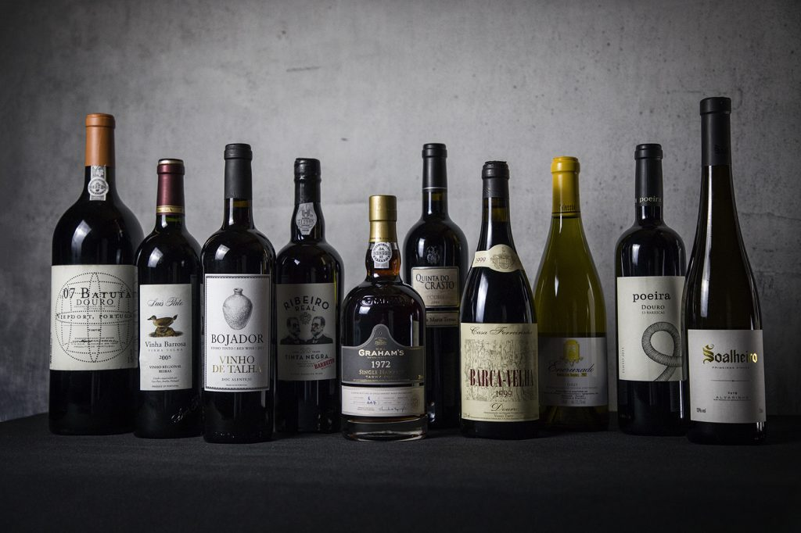

Gastronomia Portuguesa
A gastronomia portuguesa é rica em sabores e tradições, refletindo a diversidade cultural e geográfica do país. Desde os pratos à base de peixe e marisco, até as saborosas sobremesas, cada região tem suas especialidades que conquistam os paladares de quem visita.
Pratos Típicos
A comida portuguesa é caracterizada pela simplicidade e pelo uso de ingredientes frescos e locais. O bacalhau, conhecido como "o fiel amigo", é o prato mais emblemático de Portugal, preparado de diversas formas: à Brás, com natas, ou assado no forno. Outros pratos tradicionais incluem o caldo verde, uma sopa de couve e batata, e o arroz de marisco, uma verdadeira delícia para os amantes de frutos do mar.
Na região do Alentejo, o porco preto é uma iguaria, geralmente servido em pratos como feijoada à alentejana ou carne de porco à alentejana, com batatas e amêijoas. No norte, pratos como a francesinha, um sanduíche recheado com carne, queijo e coberto com molho picante, são bastante populares.
Sobremesas Portuguesas
Portugal é também famoso pelas suas sobremesas deliciosas e doces tradicionais. A pastelaria portuguesa é rica e variada, com destaque para o pastel de nata, uma pequena tarte de creme de ovos que é um verdadeiro símbolo do país. A torta de Azeitão, o bolo de bolacha e a queijada de Sintra são outras sobremesas tradicionais que conquistam todos os gostos.
Além disso, o arroz doce e o pudim flan são sobremesas populares nas casas portuguesas, frequentemente servidas nas festas e celebrações familiares. Cada região tem suas próprias receitas, muitas delas passadas de geração em geração, mantendo viva a tradição doce de Portugal.

Vinhos Portugueses
Portugal é mundialmente conhecido pelos seus vinhos, especialmente pelo Vinho do Porto, originário da região do Douro. Este vinho fortificado é ideal para acompanhar sobremesas ou para ser apreciado sozinho, como um aperitivo. Além do Vinho do Porto, o país produz excelentes vinhos tintos e brancos, como o Vinho Verde, da região do Minho, e o Alentejano, conhecido pelo seu sabor encorpado.
As regiões vinícolas de Portugal, como o Douro, o Alentejo e o Dão, são locais ideais para explorar e provar alguns dos melhores vinhos do mundo, refletindo a paixão e a história vitivinícola do país.
